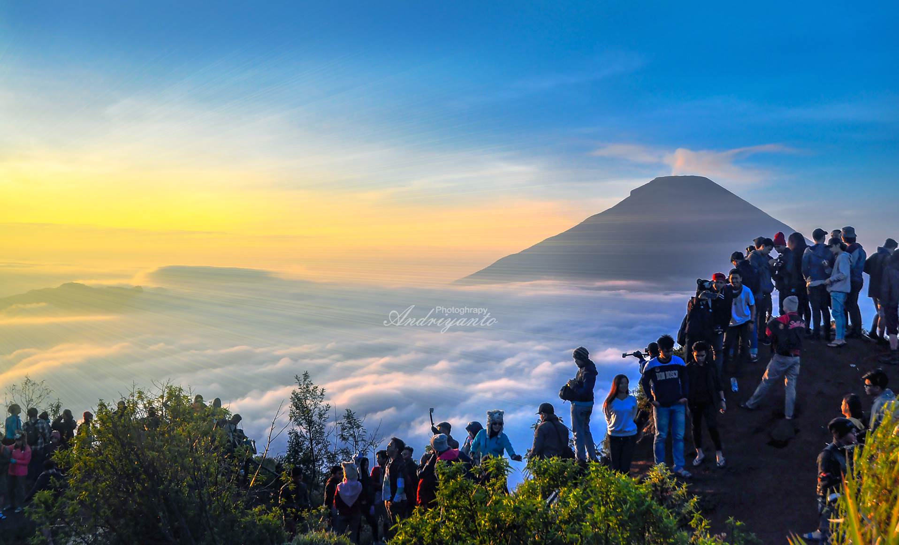

terkenal dengan julukan "Negeri di Atas Awan" karena lokasinya yang berada di ketinggian sekitar 2.000 meter di atas permukaan laut (mdpl). Kawasan ini menawarkan perpaduan unik antara keindahan alam, kekayaan sejarah, dan budaya yang khas. Berikut adalah penjelasan lebih rinci mengenai Dieng: Geografi dan Iklim Dataran Tinggi Dieng merupakan bagian dari kompleks gunung api purba, yang aktivitas vulkaniknya telah membentuk lanskap pegunungan, perbukitan, kawah, dan danau vulkanik di sekitarnya. Wilayah ini mencakup bagian dari Kabupaten Wonosobo dan Kabupaten Banjarnegara. Suhunya berkisar antara 12–20°C di siang hari dan bisa turun hingga 6–10°C di malam hari, menjadikannya salah satu daerah terdingin di Pulau Jawa
Daya Tarik Wisata Dieng merupakan destinasi wisata populer yang menawarkan beragam objek wisata alam, sejarah, dan budaya. Wisata Alam: Pengunjung dapat menikmati Golden Sunrise dari Bukit Sikunir atau mendaki Gunung Prau untuk pemandangan yang memukau. Keindahan alam lainnya termasuk Telaga Warna yang airnya dapat berubah warna, serta kawah vulkanik aktif seperti Kawah Sikidang. Wisata Sejarah dan Budaya: Dieng memiliki Kompleks Candi Arjuna, kumpulan candi Hindu kuno yang diperkirakan sebagai candi tertua di Jawa. Terdapat juga Dieng Plateau Theater yang menayangkan film dokumenter tentang kawasan ini. Fenomena Unik: Dieng juga terkenal dengan fenomena budaya anak gimbal (anak berambut gimbal) dan upacara adat potong rambut gimbal yang diadakan setiap tahun dalam festival budaya. Kehidupan Lokal Masyarakat Dieng mayoritas berprofesi sebagai petani, dengan kentang sebagai komoditas utama yang dihasilkan dari tanahnya yang subur. Nama "Dieng" sendiri berasal dari kata bahasa Proto-Melayu-Polinesia: di yang berarti "tempat" dan hyang yang bermakna "leluhur" atau "dewa", mencerminkan sejarah panjang kawasan ini sebagai tempat suci. .